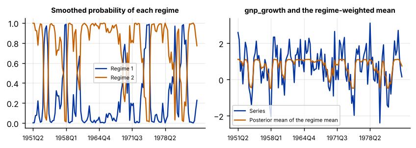

Run this model on your own data in Open Econometric Systems →
Step 1The question and the model
Can the data find the recessions without being told where they are? In a Markov-switching regression the regime \(s_t \in \{1, \dots, K\}\) is hidden and follows a first-order Markov chain with transition probabilities \(p_{ij} = \Pr(s_t = j \mid s_{t-1} = i)\); conditional on the regime the series is an ordinary regression:
The intercept always switches; slopes and the variance may or may not. The maximum-likelihood version (the Markov-switching guides) gives point estimates and asymptotic standard errors, which are often unreliable here because the likelihood is multi-modal and the effective sample is the number of regime changes, which is small. The Bayesian version (Albert and Chib 1993; Chib 1996; Kim and Nelson 1999) samples everything jointly:
- the whole regime path \(s_{1:T}\), by forward filtering and backward sampling (Hamilton filter, then a draw for each period from the last backwards);
- the regression coefficients, by a normal update given the regimes;
- the variances, by inverse-gamma draws;
- each row of the transition matrix, by a Dirichlet draw from the counts of transitions.
The result is a posterior for every parameter, for the duration \(1/(1 - p_{jj})\) of each regime, for the long-run share of time in each regime, and for the regime of every period. Label switching (the regimes can swap names between draws) is fixed by ordering the regimes by their intercepts (or by their variances), which the output reports.
| Output | What it answers |
|---|---|
| Regime parameters | Posterior mean, interval of the intercept, slopes and standard deviation in each regime, next to the maximum likelihood |
| Transition probabilities | Probability of moving between regimes, with intervals |
| Durations and long-run shares | How long each regime lasts and how much of the time it occupies |
| Regime dates | Runs of periods in which a regime is more likely than not, and agreement with a reference series |
| Diagnostics | R-hat and effective sample sizes, and the share of draws in which the labels had to be reordered |
How to write it: the model
We model U.S. quarterly GNP growth as a two-regime Markov-switching regression with a regime-dependent mean and a common variance, estimated by Gibbs sampling (Albert and Chib 1993; Chib 1996). The regime path is drawn by forward filtering and backward sampling, the regime means by a normal update, the variance by an inverse-gamma update and each row of the transition matrix by a Dirichlet update. The priors are N(0, 5²) on the standardised regime means, inverse gamma(2, 1) on the standardised variance and Dirichlet(1, 1) on each row of the transition matrix. The regimes are ordered by their means to fix the labelling. We run two chains of 3,000 draws after 1,000 burn-in draws and check convergence with R-hat and effective sample sizes.
Step 2Load the data
import numpy as np
import pandas as pd
import oes_engine as oes # pip install -e open-econometric-systems/oes-engine
data = open("hamilton_gnp.csv").read()
d = pd.read_csv("hamilton_gnp.csv")
print(d.shape, d.date.iloc[0], "to", d.date.iloc[-1])
print(d.gnp_growth.describe().round(2).loc[["mean", "std", "min", "max"]])
print("quarters the NBER calls a recession:", int(d.nber_recession.sum()), "of", len(d))
print("mean growth in NBER recession quarters:", d.gnp_growth[d.nber_recession == 1].mean().round(2), " in other quarters:", d.gnp_growth[d.nber_recession == 0].mean().round(2))(135, 3) 1951Q2 to 1984Q4 mean 0.74 std 1.07 min -2.39 max 3.11 Name: gnp_growth, dtype: float64 quarters the NBER calls a recession: 27 of 135 mean growth in NBER recession quarters: -0.58 in other quarters: 1.08
How to read it
The 135 quarters of growth (in percent, annualised) have a mean of 0.74 and a standard deviation of 1.07, ranging from \(-2.39\) to 3.11. The NBER calls 27 of the quarters recessions; growth in those was \(-0.58\) on average and 1.08 in the rest. The NBER dates are not used in the estimation; they are the check against which the method's dates are judged.
Step 3Estimate
spec = dict(y="gnp_growth", time="date", reference="nber_recession", switching_variance="no", draws=3000, burn=1000)
r = oes.run("bayes_ms", data, spec)
oes.summary(r)
oes.show(r, "Posterior of the regime parameters")
oes.show(r, "Transition probabilities")
oes.show(r, "Expected duration")Observations: 135
Regimes: 2
Lags and regressors: 0
Largest R-hat: 1.003
Smallest effective sample size: 481.0
Draws relabelled (%): 0.0
Posterior of the regime parameters
Parameter Mean Std. dev. 2.5% 97.5% Maximum likelihood
Regime
Regime 1 Intercept -0.5036 0.3592 -1.3184 0.1105 -0.4868
All regimes Std. deviation 0.8454 0.0652 0.7268 0.9845 0.8335
Regime 2 Intercept 1.1144 0.1349 0.8649 1.4010 1.1043
Note: Regimes ordered by their intercepts, which fixes the labelling. The maximum-likelihood column is the classical estimate from statsmodels, matched by the same ordering.
Transition probabilities
Mean Std. dev. 2.5% 97.5%
From -> to
1 -> 1 0.6475 0.1351 0.3356 0.8616
1 -> 2 0.3525 0.1351 0.1384 0.6644
2 -> 1 0.1141 0.0578 0.0343 0.2551
2 -> 2 0.8859 0.0578 0.7449 0.9657
Note: Probability of moving from the regime in one period to the regime in the next.
Expected duration and long-run share of each regime
Duration (periods), mean median 2.5% 97.5% Long-run share, mean 2.5% 97.5%
Regime
Regime 1 3.34 2.98 1.51 7.22 0.254 0.074 0.511
Regime 2 11.34 9.64 3.92 29.12 0.746 0.489 0.926
Note: Duration = 1 / (1 - p_jj). The long-run share is the stationary distribution of the chain; its interval comes from the posterior of the transition matrix.How to read it
The sampler is sound: R-hat is at most 1.003 and the smallest effective sample size is 481 out of 6,000 draws, and no draw needed relabelling, so the two regimes are well separated.
Regime means. Regime 1, the slow regime, has a mean growth of \(-0.50\) with a posterior standard deviation of 0.36 (95% interval \(-1.32\) to 0.11); regime 2, the fast regime, has 1.11 (0.86 to 1.40). The maximum-likelihood values (\(-0.49\) and 1.10) are close to the posterior means. The interval of the slow regime is wide because only a quarter of the quarters belong to it, and it just reaches zero: the data say that growth in the slow regime is probably negative, but not with certainty. The common standard deviation is 0.85 (0.73 to 0.98).
Persistence. The probability that the fast regime continues is 0.89 (0.74 to 0.97): an expected duration of 11 quarters (95% interval 4 to 29). The slow regime continues with probability 0.65 (0.34 to 0.86), for an expected duration of 3.3 quarters (1.5 to 7.2). These are asymmetric, as the business cycle is: expansions are long and recessions short. The long-run share of the slow regime is 25% (7% to 51%). The intervals are wide, and the maximum-likelihood standard errors would hide this; the Bayesian interval for a duration is the honest one.
Step 4Date the regimes
oes.show(r, "Episodes of regime 1")
oes.show(r, "Agreement with the reference")
oes.plot(r)Episodes of regime 1 (smoothed probability above 0.5)
To Length Mean probability
From
1953Q3 1954Q2 4 0.862
1957Q3 1958Q1 3 0.824
1960Q3 1960Q4 2 0.620
1969Q4 1970Q2 3 0.701
1970Q4 1970Q4 1 0.564
1974Q1 1975Q1 5 0.886
1980Q2 1980Q3 2 0.760
1981Q2 1982Q3 6 0.786
Note: Dated from the full-sample posterior probabilities; an episode is a run of periods in which regime 1 is more likely than not.
Agreement with the reference series nber_recession
Value
Measure
Share of periods classified the same 0.933
Reference periods that fall in regime 1 0.815
Other periods that fall in regime 1 0.037
Correlation of the regime-1 probability with the reference 0.829
How to read it
The method finds eight slow-growth episodes, among them 1953Q3 to 1954Q2, 1957Q3 to 1958Q1, 1969Q4 to 1970Q2, 1974Q1 to 1975Q1 and 1981Q2 to 1982Q3. They are the recessions that the NBER dates as 1953 to 1954, 1957 to 1958, 1969 to 1970, 1973 to 1975 and 1981 to 1982. The posterior probability averages 0.86 over the first episode and 0.89 over the 1974 to 1975 one: the dating is clear for the large recessions and less so for the marginal ones (1960 at 0.62 and the single quarter 1970Q4 at 0.56).
Against the NBER series, the method classifies 93.3% of the quarters in the same way. It places 81.5% of the NBER recession quarters in regime 1 and only 3.7% of the other quarters, and the correlation between the probability of regime 1 and the recession indicator is 0.83. The first chart shows the probability of each regime over time; the second the series with the regime-weighted mean.
Step 5Diagnostics: the sampler
oes.show(r, "MCMC convergence")MCMC convergence diagnostics
Parameter R-hat Effective sample size
Regime
Regime 1 Intercept 1.003 481.0
Regime 1 Std. deviation 1.001 2093.0
Regime 1 Staying probability 1.002 952.0
Regime 2 Intercept 1.001 656.0
Regime 2 Std. deviation 1.001 2093.0
Regime 2 Staying probability 1.001 660.0
Note: 2 chains of 3000 draws after 1000 burn-in. In 0.0% of the draws the labels had to be reordered to keep the regimes ordered; a high share means that the regimes are weakly separated.How to read it
R-hat is between 1.001 and 1.003 for every parameter and the effective sample sizes range from 481 (the mean of the slow regime) to 2,093. The staying probabilities, 952 and 660, are the quantities that mix most slowly in Markov-switching models because they depend on the sampled regime path. The last line of the note reports the share of draws in which the labels had to be reordered: 0.0% here. A high share (more than 10%) means that the regimes are barely separated and that the ordering is doing a lot of work; then reduce the number of regimes or add information.
Step 6Let the variance switch
Recessions are often more volatile as well as slower. Let each regime have its own standard deviation.
rv = oes.run("bayes_ms", data, dict(spec, switching_variance="yes", reference="nber_recession"))
oes.show(rv, "Posterior of the regime parameters")
oes.show(rv, "Transition probabilities")
oes.show(rv, "Agreement with the reference")Posterior of the regime parameters
Parameter Mean Std. dev. 2.5% 97.5% Maximum likelihood
Regime
Regime 1 Intercept -0.2077 0.3931 -1.0965 0.4769 -0.2243
Regime 1 Std. deviation 0.9701 0.1447 0.6975 1.2699 0.9707
Regime 2 Intercept 1.2120 0.1806 0.9040 1.6210 1.1765
Regime 2 Std. deviation 0.7759 0.0924 0.5800 0.9562 0.7872
Note: Regimes ordered by their intercepts, which fixes the labelling. The maximum-likelihood column is the classical estimate from statsmodels, matched by the same ordering.
Transition probabilities
Mean Std. dev. 2.5% 97.5%
From -> to
1 -> 1 0.7084 0.1277 0.4097 0.9012
1 -> 2 0.2916 0.1277 0.0988 0.5903
2 -> 1 0.1631 0.0970 0.0417 0.4127
2 -> 2 0.8369 0.0970 0.5873 0.9583
Note: Probability of moving from the regime in one period to the regime in the next.
Agreement with the reference series nber_recession
Value
Measure
Share of periods classified the same 0.889
Reference periods that fall in regime 1 0.963
Other periods that fall in regime 1 0.130
Correlation of the regime-1 probability with the reference 0.782How to read it
The standard deviation is 0.97 in the slow regime (95% interval 0.70 to 1.27) and 0.78 in the fast one (0.58 to 0.96), the same as the maximum-likelihood values (0.97 and 0.79), but the intervals overlap heavily: the data do not say that the regimes differ in volatility. The means move too, to \(-0.21\) and 1.21. The regime dating changes in a revealing way: the share of the NBER recession quarters in regime 1 rises from 0.82 to 0.96, but the share of other quarters in regime 1 also rises from 0.04 to 0.13, so the overall agreement falls from 93% to 89%. Letting the variance switch gives the slow regime more room to absorb volatile quarters that are not recessions. The constant-variance model is the better dating device for these data.
Step 7Robustness: the prior on staying
The Dirichlet prior on each row of the transition matrix is flat by default. Because regimes are persistent you may want to add prior weight to the diagonal.
rows = []
for stay in (0, 2, 5):
rs = oes.run("bayes_ms", data, dict(spec, prior_stay=stay, draws=2000, burn=800))
t = {q[0]: q for q in rs["tables"][1]["rows"]}
dur = rs["tables"][2]["rows"]
rows.append([stay, t["1 -> 1"][1], t["2 -> 2"][1], dur[0][1], dur[1][1]])
print(pd.DataFrame(rows, columns=["extra prior weight on staying", "P(1->1)", "P(2->2)", "duration regime 1", "duration regime 2"]).to_string(index=False)) extra prior weight on staying P(1->1) P(2->2) duration regime 1 duration regime 2
0 0.6496 0.8863 3.37 11.39
2 0.6998 0.8916 6.94 12.42
5 0.7422 0.8991 4.53 12.57How to read it
Adding 2 or 5 extra prior observations of staying in a regime raises the posterior probability of staying in the slow regime from 0.65 to 0.70 and 0.74, and the expected duration from 3.4 to 6.9 and 4.5 quarters (the duration is a ratio of a small number and is noisy across runs). The fast regime hardly moves (0.886, 0.892, 0.899). With 135 quarters and about 25 in the slow regime the prior does matter for the slow regime, and it should be reported. The regime means and the dating, which depend mostly on the data, change little.
Step 8A warning about autoregressive terms
Hamilton's own model has the regime in the mean of an autoregression. Here the lag of the series enters as a regressor with a common coefficient and only the intercept switches, which is a different model.
ra = oes.run("bayes_ms", data, dict(spec, ar=1, draws=6000, burn=2000))
oes.show(ra, "Posterior of the regime parameters")
oes.show(ra, "Agreement with the reference")
oes.show(ra, "MCMC convergence")Posterior of the regime parameters
Parameter Mean Std. dev. 2.5% 97.5% Maximum likelihood
Regime
Regime 1 Level at the mean of the regressors -0.1410 0.6490 -1.1989 0.7461 n/a
All regimes Std. deviation 0.8474 0.1148 0.6472 1.0678 n/a
All regimes gnp_growth(t-1) 0.3382 0.1239 0.0895 0.5665 n/a
Regime 2 Level at the mean of the regressors 1.1172 0.4858 0.7071 1.4826 n/a
Note: Regimes ordered by their intercepts, which fixes the labelling. The maximum-likelihood column is the classical estimate from statsmodels, matched by the same ordering.
Agreement with the reference series nber_recession
Value
Measure
Share of periods classified the same 0.791
Reference periods that fall in regime 1 0.630
Other periods that fall in regime 1 0.168
Correlation of the regime-1 probability with the reference 0.514
MCMC convergence diagnostics
Parameter R-hat Effective sample size
Regime
Regime 1 Intercept 1.006 528.0
Regime 1 Std. deviation 1.023 384.0
Regime 1 Staying probability 1.014 303.0
Regime 2 Intercept 1.000 1441.0
Regime 2 Std. deviation 1.023 384.0
Regime 2 Staying probability 1.001 239.0
Note: 2 chains of 6000 draws after 2000 burn-in. In 3.8% of the draws the labels had to be reordered to keep the regimes ordered; a high share means that the regimes are weakly separated.How to read it
With one lag, the autoregressive coefficient is 0.34 (95% interval 0.09 to 0.57) and the regimes blur: the slow regime's level is \(-0.14\) (interval \(-1.20\) to 0.75), the agreement with the NBER falls to 79%, the share of the NBER recession quarters in regime 1 falls to 63%, and in 3.8% of the draws the labels had to be reordered. The lag soaks up the persistence that the regimes were capturing. The effective sample sizes are 239 to 1,441 after 6,000 draws. With only 135 quarters the data cannot sharply identify the regimes and an autoregression at the same time. If you need Hamilton's mean-switching autoregression, use the Markov-switching autoregression guide; if you add lags here, check the agreement, the share of reordered draws and the effective sample sizes, as in this step.
Step 9Diagnostics: do the intervals cover?
Simulate 30 series of 250 observations from a two-regime chain with known means (\(-1\) and 2), standard deviation 1 and transition probabilities of 0.9 and 0.85.
rng = np.random.default_rng(0)
cover, acc = [], []
for s in range(30):
n = 250; st = np.zeros(n, int)
for t in range(1, n):
st[t] = rng.choice(2, p=[0.9, 0.1] if st[t - 1] == 0 else [0.15, 0.85])
y = np.where(st == 0, -1.0, 2.0) + rng.normal(size=n)
sim = pd.DataFrame({"t": np.arange(n), "y": y})
rs = oes.run("bayes_ms", sim.to_csv(index=False), dict(y="y", time="t", switching_variance="no", draws=800, burn=400, seed=s))
t1, t2 = [q for q in rs["tables"][0]["rows"] if q[1] == "Intercept"]
cover.append([t1[4] <= -1 <= t1[5], t2[4] <= 2 <= t2[5]])
p1 = np.array(rs["charts"][0]["series"][0]["y"], float); acc.append(((p1 > 0.5) == (st == 0)).mean())
print("coverage of the 95% intervals of the two regime means:", np.mean(cover, axis=0).round(2))
print("average share of periods classified correctly:", np.mean(acc).round(3))coverage of the 95% intervals of the two regime means: [0.9 0.93] average share of periods classified correctly: 0.974
How to read it
The 95% intervals of the two regime means contain the truth in 90% and 93% of the 30 samples (the standard error with 30 samples is about 4 points), and on average 97.4% of the periods are assigned to the right regime. The test suite adds a check against maximum likelihood, recovery of transition probabilities, variance switching, common and switching slopes, and that a series of pure noise does not produce two separated regimes.
Step 10Switching slopes: the Phillips curve
The same sampler with switching slopes and variance. The relation between inflation and unemployment, 1959 to 2009; the intercept is the level of inflation at the average rate of unemployment.
m = open("us_macro.csv").read()
rp = oes.run("bayes_ms", m, dict(y="inflation", x=["unemp"], time="date", switching_slopes="yes", switching_variance="yes", draws=15000, burn=3000))
oes.show(rp, "Posterior of the regime parameters")
oes.show(rp, "Transition probabilities")
oes.show(rp, "Episodes of regime 1")
oes.show(rp, "MCMC convergence")Posterior of the regime parameters
Parameter Mean Std. dev. 2.5% 97.5% Maximum likelihood
Regime
Regime 1 Level at the mean of the regressors 2.7990 0.1851 2.4359 3.1570 n/a
Regime 1 Std. deviation 1.8451 0.3192 1.2676 2.3292 n/a
Regime 1 unemp -0.1822 0.2007 -0.5658 0.2150 n/a
Regime 2 Level at the mean of the regressors 9.0036 1.6350 5.8618 11.3146 n/a
Regime 2 Std. deviation 3.3838 0.8974 2.1252 4.9877 n/a
Regime 2 unemp -1.1773 0.6943 -2.1778 0.2875 n/a
Note: Regimes ordered by their intercepts, which fixes the labelling. The maximum-likelihood column is the classical estimate from statsmodels, matched by the same ordering.
Transition probabilities
Mean Std. dev. 2.5% 97.5%
From -> to
1 -> 1 0.9725 0.0228 0.9150 0.9977
1 -> 2 0.0275 0.0228 0.0023 0.0850
2 -> 1 0.0718 0.0480 0.0085 0.1862
2 -> 2 0.9282 0.0480 0.8138 0.9915
Note: Probability of moving from the regime in one period to the regime in the next.
Episodes of regime 1 (smoothed probability above 0.5)
To Length Mean probability
From
1959Q2 1972Q4 55 0.956
1983Q2 2009Q3 106 0.927
Note: Dated from the full-sample posterior probabilities; an episode is a run of periods in which regime 1 is more likely than not.
MCMC convergence diagnostics
Parameter R-hat Effective sample size
Regime
Regime 1 Intercept 1.000 4440.0
Regime 1 Std. deviation 1.010 145.0
Regime 1 Staying probability 1.005 243.0
Regime 2 Intercept 1.008 158.0
Regime 2 Std. deviation 1.010 144.0
Regime 2 Staying probability 1.002 427.0
Note: 2 chains of 15000 draws after 3000 burn-in. In 0.0% of the draws the labels had to be reordered to keep the regimes ordered; a high share means that the regimes are weakly separated.How to read it
The model separates two eras. The low-inflation regime holds 1959Q2 to 1972Q4 and 1983Q2 to 2009Q3: inflation at average unemployment is 2.8% (95% interval 2.4% to 3.2%), its standard deviation is 1.8 and the slope on unemployment is \(-0.18\) with an interval of \(-0.57\) to 0.21: a flat Phillips curve. The high-inflation regime holds 1973Q1 to 1983Q1, the Great Inflation: the level is 9.0% (5.9% to 11.3%), the volatility 3.4 and the slope \(-1.18\) (\(-2.18\) to 0.29), steeper but imprecise, since only 41 quarters belong to it.
Both regimes are persistent: the low-inflation regime continues with probability 0.97 and the high one with 0.93 (0.81 to 0.99). The convergence report shows R-hat up to 1.01 and effective sample sizes from 144 to 4,440 after 15,000 draws: with long regimes there are few transitions to learn from, so the variance and persistence parameters mix slowly. Use long runs for this model and report the diagnostics; the run here takes a minute or two.
Step 11Write the results
How to write it: results
Two regimes are identified in U.S. quarterly GNP growth. Mean growth is \(-0.50\) in the slow regime (95% interval \(-1.32\) to 0.11) and 1.11 in the fast regime (0.86 to 1.40), with a common standard deviation of 0.85. The fast regime persists with probability 0.89 (expected duration 11 quarters, 95% interval 4 to 29) and the slow regime with probability 0.65 (3.3 quarters, 1.5 to 7.2). The regimes match the NBER recessions: 93% of the quarters are classified the same way, 81.5% of the NBER recession quarters fall in the slow regime and 3.7% of the others. The sampler's R-hat is at most 1.003 and the effective sample sizes exceed 480. The posterior means are close to the maximum-likelihood estimates. Letting the variance switch, or adding an autoregressive term, blurs the regimes (agreement 89% and 79%), so the constant-variance specification is used. In simulation, the 95% intervals of the regime means covered the truth in 90% to 93% of the samples. Applied to inflation and unemployment, the model separates a low-inflation regime (2.8% at average unemployment, slope \(-0.18\)) from the 1973 to 1983 high-inflation regime (9.0%, slope \(-1.18\)).
| Report | What | Where |
|---|---|---|
| Model | Regimes, priors, sampler, labelling | Step 1 |
| Regime parameters | Means, standard deviation, intervals | Step 3 |
| Persistence | Transition probabilities, durations, long-run shares | Step 3 |
| Dates | Regime episodes, agreement with a reference | Step 4 |
| Convergence | R-hat, effective sample sizes, relabelled draws | Step 5 |
| Robustness | Switching variance, prior on staying, autoregressive terms | Steps 6, 7 and 8 |
| Coverage | Simulation | Step 9 |
| Switching slopes | Phillips curve regimes | Step 10 |
References. Hamilton (1989), Econometrica; Albert and Chib (1993), Journal of Business and Economic Statistics; Chib (1996), Journal of Econometrics; Kim and Nelson (1999), State-Space Models with Regime Switching, MIT Press; Frühwirth-Schnatter (2006), Finite Mixture and Markov Switching Models, Springer; Stephens (2000), Journal of the Royal Statistical Society B; Krolzig (1997), Markov-Switching Vector Autoregressions, Springer.